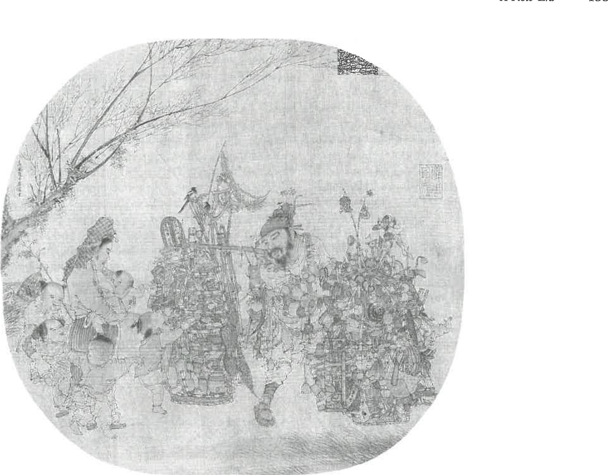

Source: Ebrey, A History of China, ch. 8, pp. 132–133.
The countryside · market participation
Farmers Increasingly Produced for Markets
Selling surplus
Some farmers sold surpluses and purchased goods such as tea, oil, or charcoal.
Growing for sale
Others grew commercial products such as tea, cotton, sugar, or oranges.
Buying food
Some households purchased grain instead of growing all their own food.
Commercialization meant greater participation in buying and selling.
Source: Ebrey, A History of China, ch. 8, p. 132.
Transport · rivers and coasts
Shipping Connected Specialized Producers and Consumers
Producers Regional specialization depended on connections to buyers.
→
Shipping Inland and coastal shipping moved commercial crops and other goods.
→
Consumers Transport linked rural production with urban consumption.
Shipping demand created work for shipbuilders and sailors.
Source: Ebrey, A History of China, ch. 8, pp. 132–133.
Money and business · late Tang to Song
Growing Trade Encouraged New Money and Business Organizations
Moving value
More buying and selling increased demand for currency.
Deposit receipts offered an alternative to carrying heavy copper coins.
Paper money developed through merchant practices and government involvement.
Organizing exchange
Partnerships and merchant guilds organized increasingly specialized trade.
×
Deposit receipt
A document representing money or goods left with a business (a "deposit shop"). Merchants traded the receipts instead of hauling heavy coins.
×
Guild
An association of merchants in a particular line of trade. In large Song cities, guilds were organized by the type of product sold.
Source: Ebrey, A History of China, ch. 8, p. 132.
Industry · iron and paper
Industrial Growth Supplied Expanding Civilian and Military Demand
125,000
tons of iron a year by 1078, according to the chapter
Coke increasingly replaced charcoal as a fuel for iron production.
Armies required armor, swords, and other manufactured equipment.
Papermaking expanded to supply books, documents, money, and packaging.
×
Coke
A fuel made from coal and used for high-temperature production such as iron smelting. In Song China, bituminous coke largely replaced charcoal by the end of the eleventh century.
Source: Ebrey, A History of China, ch. 8, p. 132.
Urban life · Kaifeng
Commercial Growth Changed City Life

Knick-knack peddler · Song court painting
Knick-knack Peddler, Song court painting of ordinary commercial life. National Palace Museum, Taipei; reproduced in Ebrey, p. 133.
Kaifeng grew around commerce near the northern end of the Grand Canal.
Its urban life differed from Chang'an's planned, separated wards.
The abolition of Kaifeng's curfew in 1063 allowed businesses to remain open at night.
Urban markets supported numerous specialized goods and services.
Source: Ebrey, A History of China, ch. 8, pp. 132–133.
Pause & Process · Review Question 3 · 5 minutes
Explain the Economic Revolution
What were the primary drivers of the medieval Chinese economic revolution during the Song period, and how did these changes affect the demographic and commercial landscape?
Write a brief response of 3–5 sentences.
Connect at least three developments from the lecture rather than listing them.
Include one effect on population or settlement and one effect on commerce.
Use one concrete example, such as rice cultivation, shipping, commercial crops, paper money, or city growth.
2 min write on your own · 2 min compare with a partner: underline the words that explain a connection, such as "because" or "therefore" · 1 min share a connection and revise.
Review Question 3, Chapter 8 reading guide; Ebrey, A History of China, ch. 8, pp. 132–133.
Trade with rivals · Liao, Xia, Jin
Trade Connected Song with Its Military Rivals
Treaty payments helped neighboring states purchase Song goods.
Song exports Song exported goods including tea, silk, porcelain, and printed books.
⇄
Border markets Supervised border markets connected rival governments and populations.
⇄
Imports Imports included horses, other animals, and goods arriving through Central Asia.
Key term: tariff
×
Tariff
A tax on goods crossing a designated trading boundary. The Song government collected tariffs on trade at its supervised border markets.
Source: Ebrey, A History of China, ch. 8, pp. 130, 133–134.
The sea routes · Southeast Asia and the Indian Ocean
Overseas Commerce Expanded Across the Indian Ocean
Maritime foreign trade exceeded overland foreign trade during Song times.
Sea networks linked China with Southeast Asia and the Indian Ocean world.
Song officials encouraged foreign traders to visit Chinese ports.
Major exportPorcelain
Important importsSpices and aromatics
Key term: South Seas
×
South Seas
The maritime world of Southeast Asia, linked to the wider commerce of the Indian Ocean.
Source: Ebrey, A History of China, ch. 8, pp. 133–134.
Technology · Review Question 4
Shipbuilding and Navigation Supported Maritime Expansion
Feature
Contribution to seafaring
Large hulls
Greater carrying capacity
Waterproofing and watertight bulkheads
Protection against water intrusion
Stern-mounted rudders
Improved steering
Sounding lines and improved compasses
Depth measurement and navigation
×
Bulkhead
A wall that divides a ship's interior into compartments. Watertight bulkheads keep water that enters one compartment from flooding the whole ship.
×
Sounding line
A weighted line lowered into the water to measure its depth.
Source: Ebrey, A History of China, ch. 8, p. 134.
Money at sea · profit and risk
Investors Pursued Profits While Spreading Maritime Risk
Incentives
Demand for traded goods offered opportunities for substantial profits.
Large cargoes helped cover the expenses of long-distance trade.
Risks
Pirates, shipwreck, and port payments made voyages costly and risky.
Spreading the risk: investors spread their money among several ships; ships had multiple investors.
Source: Ebrey, A History of China, ch. 8, p. 134.
Material evidence · the 1277 wreck
A Shipwreck Reveals the Goods Carried by Maritime Trade
1277A ship wrecked in 1277 was excavated off China's southern coast in 1973.
Its hull contained twelve bulkheads.
The wreck provides physical evidence of maritime technology and imported commodities.
Cargo included fragrant wood, pepper, betel nut, and other valuable goods.
Fragrant woodSoutheast Asia
Pepperimported spice
Betel nutimported good
Source: Ebrey, A History of China, ch. 8, p. 134.
Southern Song · Hangzhou
Hangzhou Became a Major Center of Commerce and Urban Services
Trade
Hangzhou's position at the southern end of the Grand Canal favored trade.
The city grew to approximately one million or more residents.
Consumers
Restaurants, tea houses, entertainment, and catering served urban consumers.
City problems
Fire stations, clinics, and relief institutions addressed problems of city life.
Source: Ebrey, A History of China, ch. 8, pp. 139–140.
Review Question 8 · how Southern Song survived
Southern Song Retained Productive Land and Taxable Commerce
1
The economic center had shifted south before the loss of northern China.
2
Song retained about 60 percent of the population and much productive agricultural land.
3
Commercial taxes supplied substantial government revenue.
Defense remained expensive, and monetary policies eventually produced severe inflation.
A reduced territory could still contain a strong economic base.
×
Commercial tax
A levy on exchange and business activity, as opposed to a tax on farmland or its harvest.
×
Inflation
A sustained rise in prices that reduces how much money can buy.
Source: Ebrey, A History of China, ch. 8, p. 139.
Now step back · an economic revolution
Connected Economic Changes Sustained Song Prosperity
1
Agricultural productivity, settlement, and markets expanded together.
2
Transport, money, industry, and investment connected producers and consumers.
3
Southern resources and commerce sustained Song after the loss of the north.
Source: Ebrey, A History of China, ch. 8, pp. 132–134, 139–140.
Pause & Process · Review Question 4 · 5 minutes
Explain Why Maritime Trade Expanded
Evaluate the expansion of international maritime trade during the Song Dynasty. What technological innovations and economic incentives allowed Song Chinese merchants to thrive in the South Seas?
Write a response of 3–5 sentences.
Explain how one shipbuilding or navigation feature helped trade.
Explain one economic incentive and one way merchants or investors managed risk.
Support the explanation with an example of goods or a trading connection.
2 min write on your own · 2 min compare with a partner: does the response explain both technology and economic motivation? · 1 min share an example and make a final revision.
Review Question 4, Chapter 8 reading guide; Ebrey, A History of China, ch. 8, p. 134.
Next: Lecture 3 · Education, Reform, and Religion Shaped Song Social Life
Appendix · instructor use
Activity Response Criteria
Debrief guides for the two Pause & Process activities, plus the Review Question 8 checkpoint.
Appendix · Activity 1 · Review Question 3
What a satisfactory answer includes
A satisfactory response should connect expanding rice cultivation and increased food supply with population growth or denser settlement. It should explain how market participation, specialization, or shipping increased commercial exchange. Money, industry, or city growth can provide an additional consequence or example. Strong responses show interaction among developments rather than presenting an unconnected list of inventions.
Debrief corrections: Population growth occurred over centuries. Commercial farming did not replace all subsistence production. The economic shift south was underway before the court relocated after 1127.
A satisfactory response should link a specific feature to its function: for example, rudders improved steering, compasses helped navigation, or watertight compartments limited water intrusion. It should identify demand and expected profit as incentives, with pooled or distributed investment as a response to risk. A cargo example such as porcelain, pepper, or fragrant wood should illustrate the trading network. Strong responses distinguish technological capacity, reasons to trade, and financial arrangements that helped merchants undertake risky voyages.
Debrief corrections: Improved compass use was not the discovery of magnetism. Overseas trade was not new to Song. Cargo origins do not establish a ship's complete itinerary. Reported large profits were not guaranteed returns.